February
"LLMind: Bio-inspired Training-free Adaptive Visual Representations for Vision-Language Models" accepted at CVPR 2026.
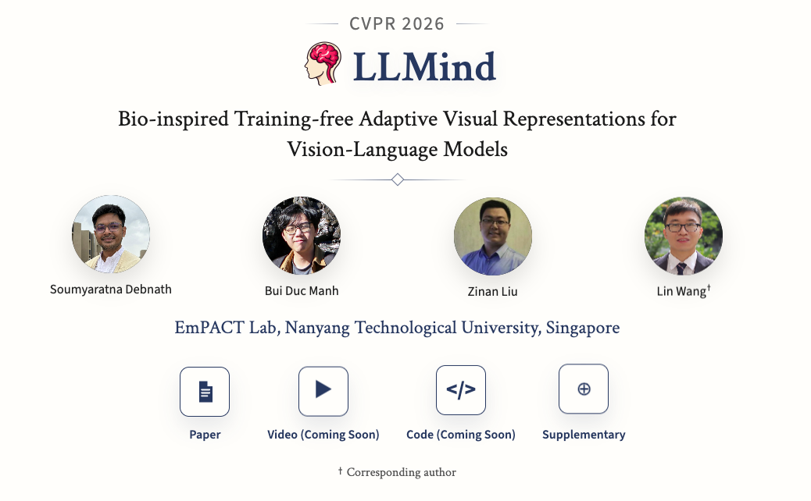
"LLMind: Bio-inspired Training-free Adaptive Visual Representations for Vision-Language Models" accepted at CVPR 2026.

Awarded the Nanyang President's Graduate Scholarship (NPGS) at NTU.
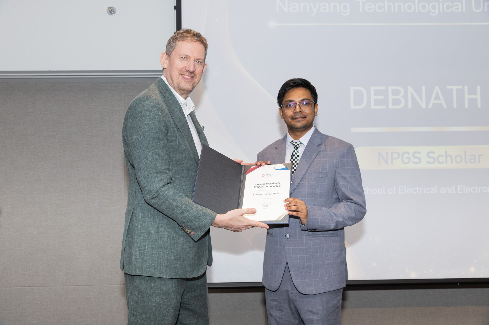
Joined the EmPACT Lab, School of EEE, Nanyang Technological University, as a PhD student.
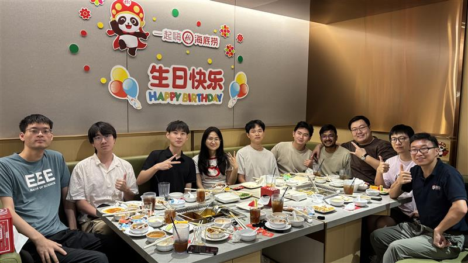
Graduated with my M.Tech in Computer Science and Engineering from the Indian Institute of Technology Gandhinagar.
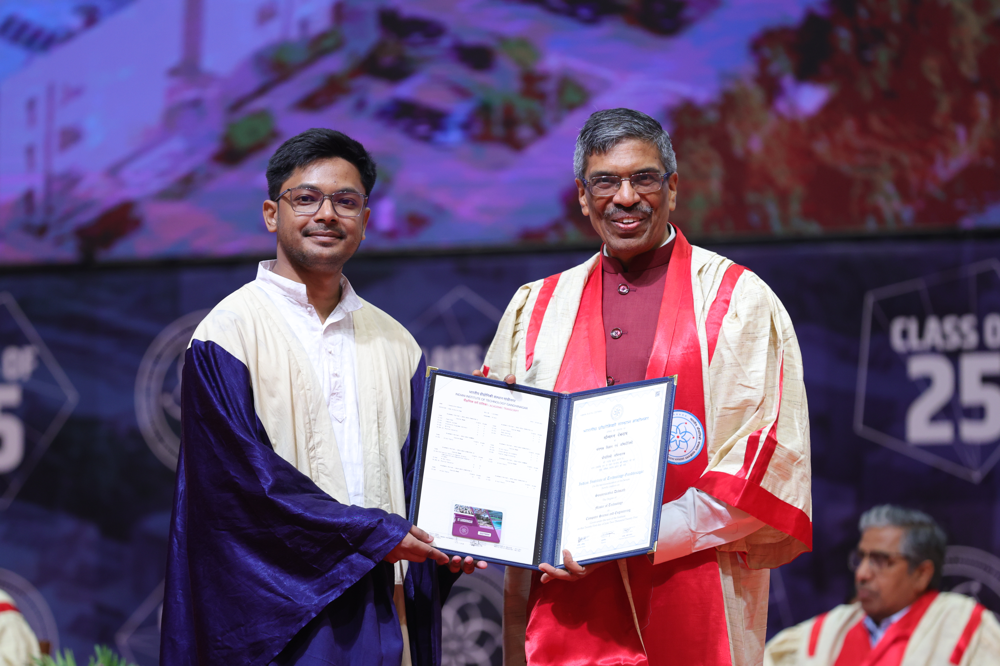
Awarded the Gold Medal for Outstanding Research (M.Tech) at the Indian Institute of Technology Gandhinagar.
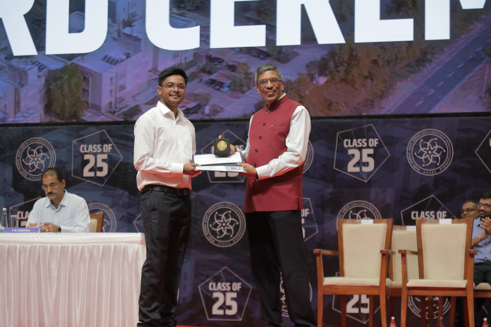
Presented "L3D-Pose: Lifting Pose for 3D Avatars from a Single Camera in the Wild" at ICASSP 2025.
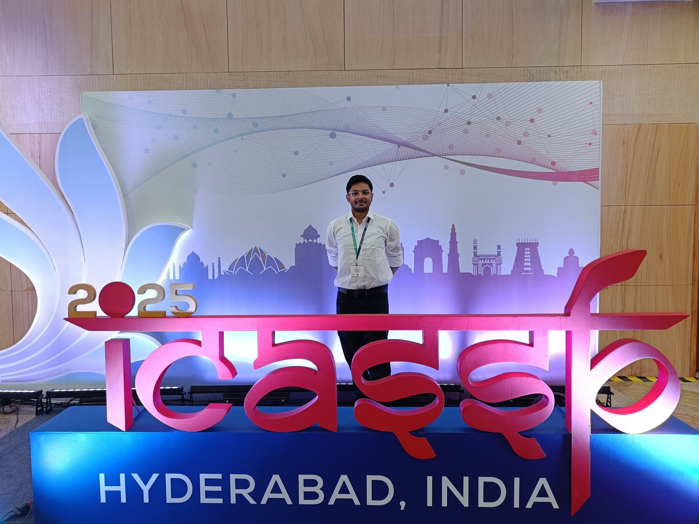
Defended my M.Tech thesis at the Indian Institute of Technology Gandhinagar.
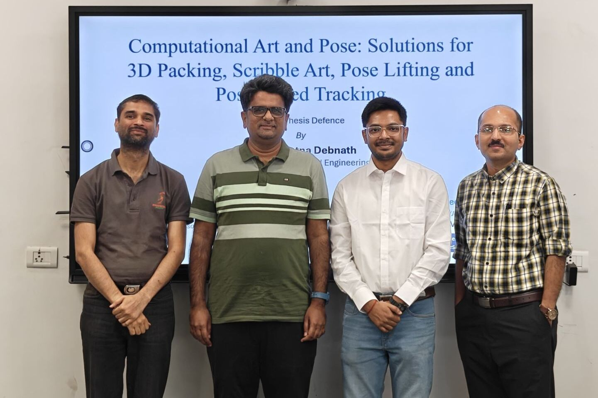
"RASP: Revisiting 3D Anamorphic Art for Shadow-Guided Packing of Irregular Objects" has been accepted at CVPR 2025.
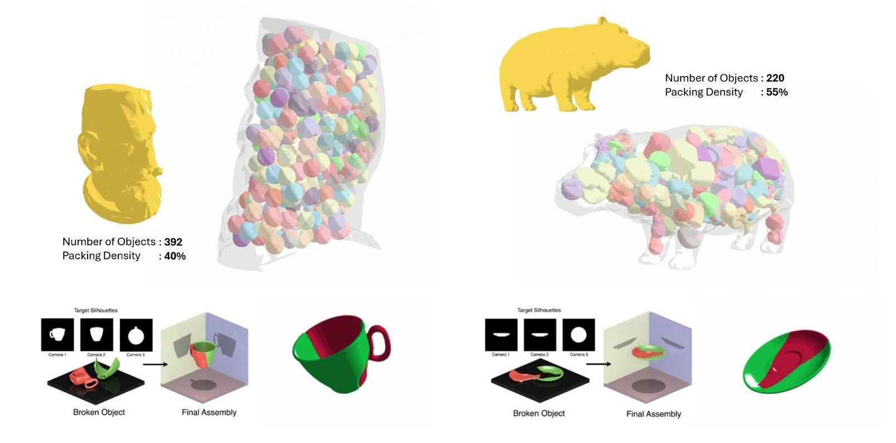
"L3D-Pose: Lifting Pose for 3D Avatars from a Single Camera in the Wild" has been accepted at ICASSP 2025.
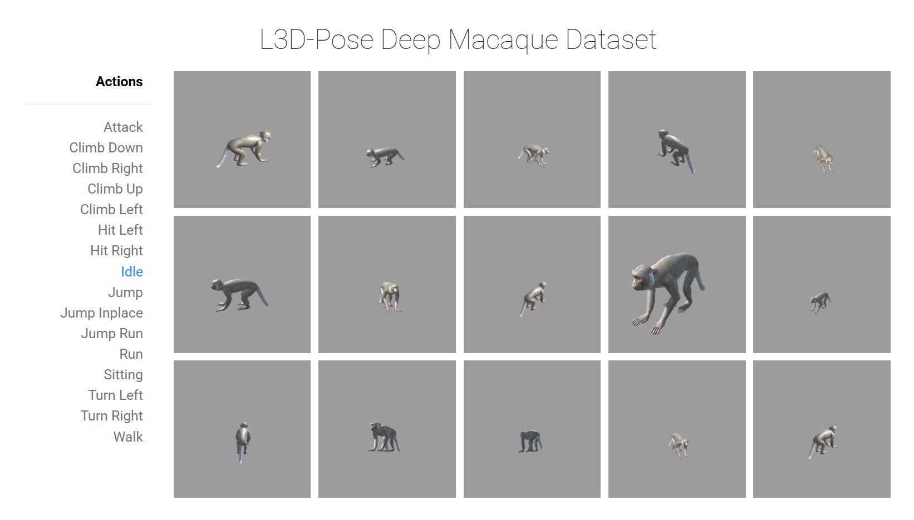
Presented "ScribGen: Generating Scribble Art Through Metaheuristics" at ACM SIGGRAPH Asia 2024, Tokyo, Japan.
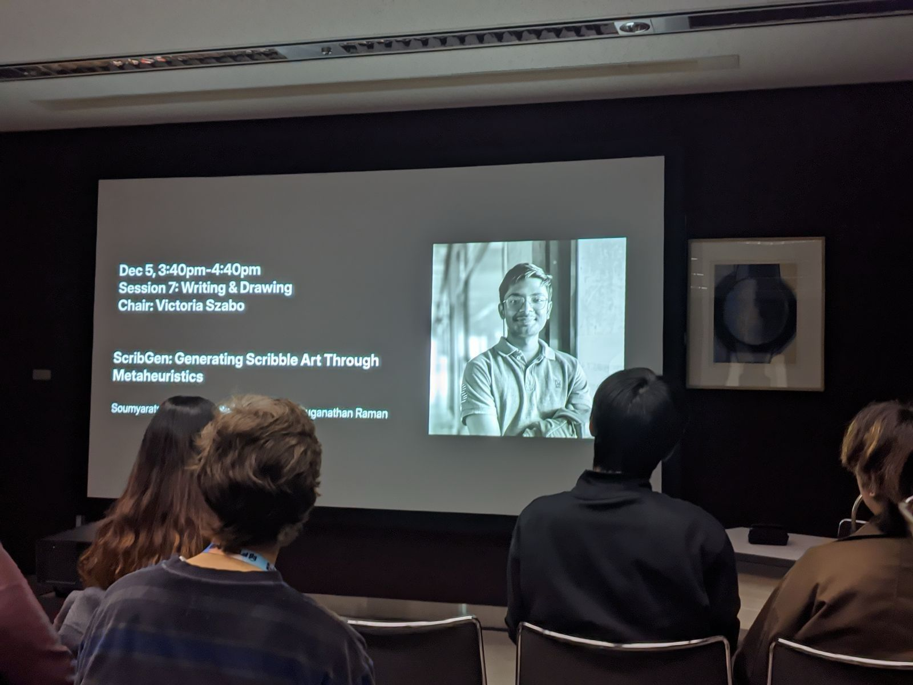
"ScribGen: Generating Scribble Art Through Metaheuristics" accepted at ACM SIGGRAPH Asia 2024.
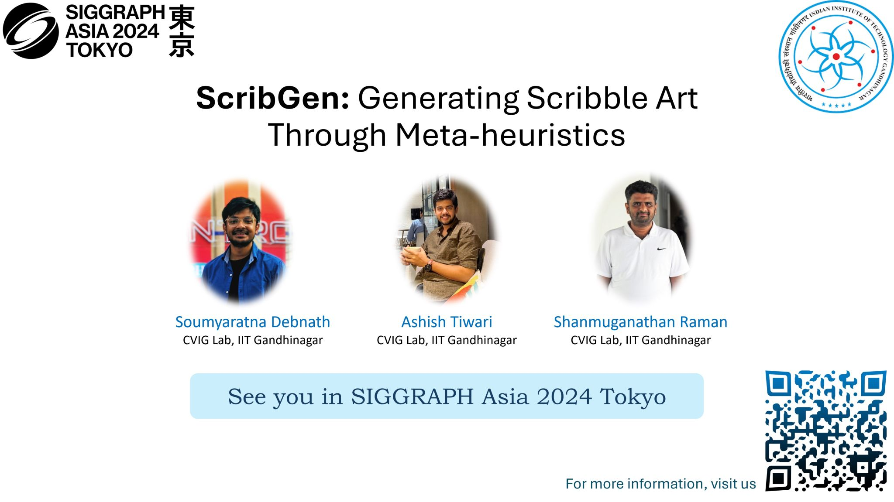